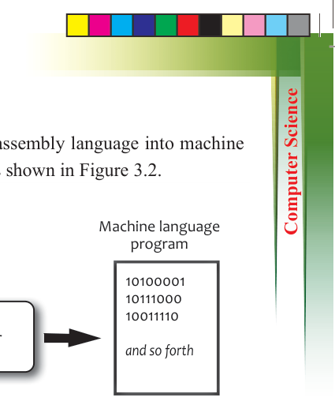
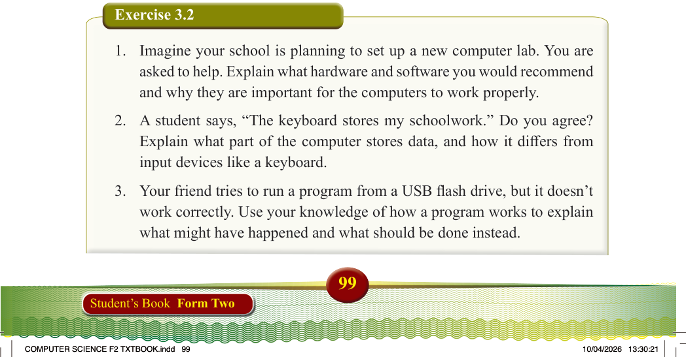
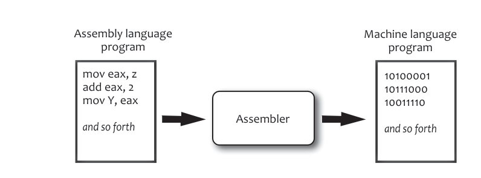

(iii) A program called an assembler changes assembly language into machine language so the CPU can understand it, as shown in Figure 3.2.

Assembly language program
Machine language program
Assembler
mov eax, z add eax, 2 mov Y, eax
and so forth
10100001
10111000
10011110
and so forth
Figure 3.2: Translating an assembly language program into a machine language program
Where programs are stored
Programs are saved on the hard drive. When you open them, they are copied to
RAM. The CPU then fetches and executes instructions directly from RAM during processing.
Generally, programming is done by following a few simple steps. The basic process of programming includes:
(i) Writing a list of instructions (this is called a program).
(ii) Saving the program on the computer.
(iii) Running the program, which loads it into the computer’s memory (RAM).
(iv) The CPU reads and follows the instructions to perform the task.
Exercise 3.2
1. Imagine your school is planning to set up a new computer lab. You are
asked to help. Explain what hardware and software you would recommend
and why they are important for the computers to work properly.
2. A student says, “The keyboard stores my schoolwork.” Do you agree?
Explain what part of the computer stores data, and how it differs from
input devices like a keyboard.
3. Your friend tries to run a program from a USB flash drive, but it doesn’t work correctly. Use your knowledge of how a program works to explain what might have happened and what should be done instead.